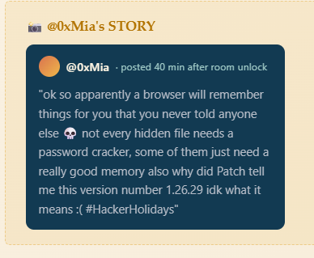
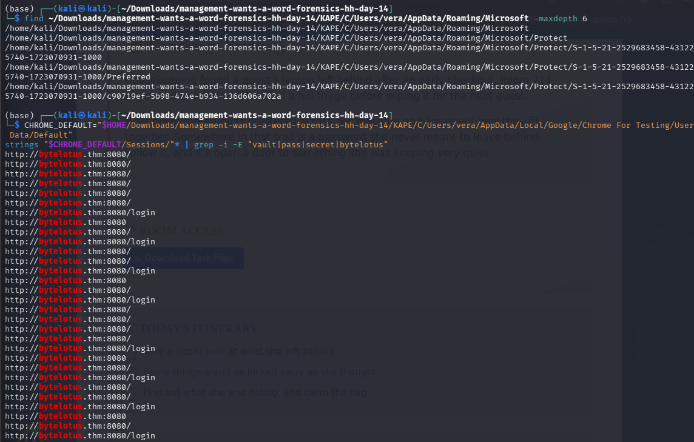
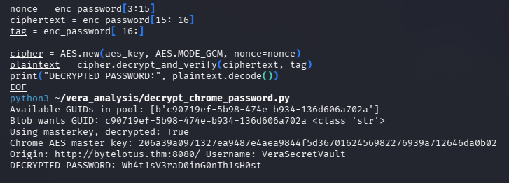
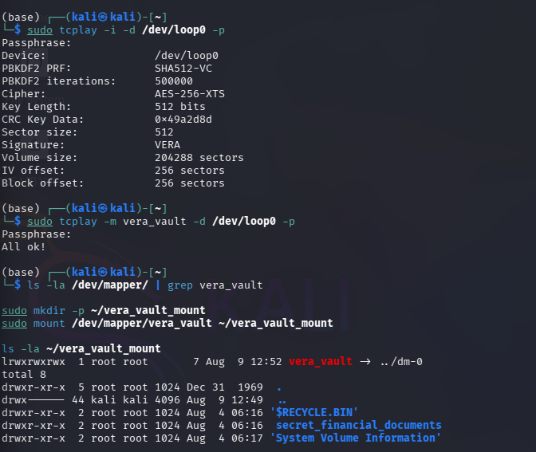
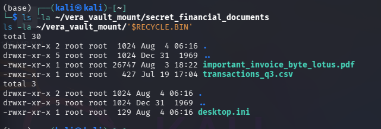
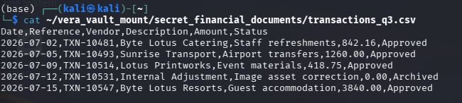
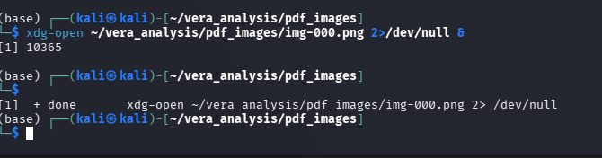
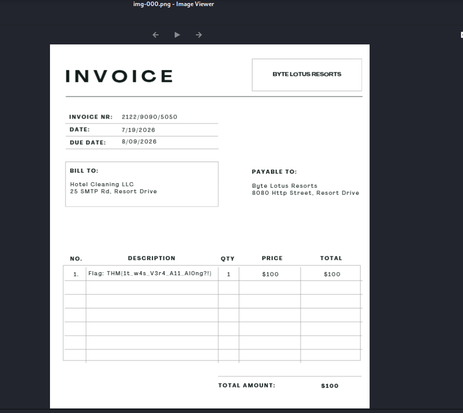

Scenario
A guest's laptop (Room 214, registered to "Vera") was left behind after an early checkout. IT pulled a full KAPE triage before wiping it. The brief: find a password Vera never meant to leave behind, and follow it to whatever she was hiding.
The key hint, from @0xMia's in-challenge post:

This was the thesis for the whole challenge: don't brute-force anything; recover secrets that Windows/Chrome already remembered on Vera's behalf, and chain them together.
1. Triage layout
The KAPE output followed a standard C:\ layout:
KAPE/C/Users/vera/... KAPE/C/Windows/System32/config/...
Relevant user artifacts:
- NTUSER.DAT — Vera's registry hive (UserAssist, RecentDocs, TypedURLs, etc.)
- AppData/Local/Google/Chrome For Testing/User Data/ — a portable Chrome profile (not a system install)
- AppData/Roaming/Microsoft/Protect/<SID>/ — Windows DPAPI master key store
- Documents/backup — a 100,857,600-byte file with no extension (turned out to be the real prize — see Part 4)
System artifacts:
- Windows/System32/config/SAM, SYSTEM, SECURITY — offline registry hives needed to recover Vera's password/hash and any stored LSA secrets
2. Following the browser trail
2.1 Autofill / History
Chrome's Web Data autofill table contained a single entry:

name=username value=VeraSecretVault
Chrome History showed a visit to a login portal:
http://bytelotus.thm:8080/ "SecureVault Portal"
http://bytelotus.thm:8080/login "Error response"
...plus search terms (chrome cves, how to exfiltrate data red teaming, tryhackme) that establish Vera's mindset/intent, and a Login Data entry confirming a saved credential for that site — username VeraSecretVault, password encrypted in Chrome's v10 (AES-256-GCM/DPAPI) format.
Note: bytelotus.thm is flavor text — there's no live target box in this room. Everything needed to solve the challenge is inside the disk image.
2.2 Chrome's saved password is DPAPI-encrypted
Chrome protects saved passwords with an AES-256 key that is itself wrapped with Windows DPAPI, tied to the user's login credential — not something you can dictionary-attack directly. Per the challenge's hint, this pointed to recovering the underlying secrets rather than cracking them.
3. Recovering Vera's Windows credential offline
Used Impacket's secretsdump.py directly against the KAPE-collected SAM/SYSTEM/SECURITY hives (no live target required):
bash
secretsdump.py -sam SAM -system SYSTEM -security SECURITY LOCAL Results:
vera:1000:aad3b435b51404eeaad3b435b51404ee:1241186a4aac4f34f4bf7ace71b396a8:::
[*] LSA Secrets
DefaultPassword
(Unknown User): minivera
The DefaultPassword LSA secret is the plaintext autologon password Windows stores for the machine — in this case it doubled as Vera's actual account password: minivera.
4. Decrypting Chrome's saved credential (DPAPI chain)
Using dpapick3 (Python), the full decryption chain:
- Decrypt the DPAPI master key (AppData/Roaming/Microsoft/Protect/<SID>/<guid>) using Vera's SID + recovered password (minivera).
- Decrypt Chrome's Local State os_crypt.encrypted_key blob using that master key → yields Chrome's AES-256 master key.
- Decrypt the Login Data password blob (v10 format: 3-byte prefix + 12-byte GCM nonce + ciphertext + 16-byte tag) with AES-256-GCM using the Chrome master key.
python from dpapick3 import masterkey, blob from Crypto.Cipher import AES import json, base64, sqlite3
mkp = masterkey.MasterKeyPool()
mkp.loadDirectory(MK_DIR)
mkp.try_credential(SID, "minivera")
local_state = json.load(open(LOCAL_STATE))
enc_key = base64.b64decode(local_state['os_crypt']['encrypted_key'])[5:] # strip "DPAPI"
blob_obj = blob.DPAPIBlob(enc_key)
mk = list(mkp.keys.values())[0][0] blob_obj.decrypt(mk.get_key())
aes_key = blob_obj.cleartext # Chrome master key
row = sqlite3.connect(LOGIN_DATA).execute(
"SELECT origin_url, username_value, password_value FROM logins").fetchone()
enc_password = row[2]
nonce, ct, tag = enc_password[3:15], enc_password[15:-16], enc_password[-16:]
password = AES.new(aes_key, AES.MODE_GCM, nonce=nonce).decrypt_and_verify(ct, tag)
Result:
Origin: http://bytelotus.thm:8080/
Username: VeraSecretVault
Password: Wh4t1sV3raD0inG0nTh1sH0st
This password turned out to be the real target — not a website login, but a VeraCrypt container password.

5. Finding and mounting the hidden container
Documents/backup looked empty in a find listing (it's a plain file, no extension) but was actually exactly 100 MB (104,857,600 bytes) — classic VeraCrypt container size, and consistent with a hex dump showing uniformly random bytes from offset 0 (VeraCrypt containers have no magic number, by design, for plausible deniability).
Mounted it with tcplay (Kali's dm-crypt/TrueCrypt-VeraCrypt-compatible CLI tool):

bash
sudo losetup -fP Documents/backup # -> /dev/loop0 sudo tcplay -i -d /dev/loop0 -p # confirm header: Signature: VERA sudo tcplay -m vera_vault -d /dev/loop0 -p # password: Wh4t1sV3raD0inG0nTh1sH0st sudo mount /dev/mapper/vera_vault ~/vera_vault_mount

Contents:
secret_financial_documents/
important_invoice_byte_lotus.pdf
transactions_q3.csv
$RECYCLE.BIN/
System Volume Information/
6. The final clue: a doctored invoice
transactions_q3.csv contained a suspicious line:
2026-07-12,TXN-10531,Internal Adjustment,Image asset correction,0.00,Archived

important_invoice_byte_lotus.pdf had no extractable text layer (pdftotext returned nothing) — it was an image-only PDF, consistent with Vera's UserAssist history showing heavy use of Paint and Snipping Tool. She'd built a fake invoice image to disguise/replace the real one.
Extracted the embedded image and viewed it:

The invoice line item read:

THM{1t_w4s_V3r4_A11_Al0ng?!}"It was Vera all along" — she wasn't a victim; the "SecureVault" credential and the encrypted backup were her own tools for hiding a financial adjustment she'd made to Byte Lotus's books.
Tooling summary
| Purpose | Tool |
|---|---|
| Browse Chrome SQLite artifacts | sqlite3 |
| Parse NTUSER.DAT (UserAssist etc.) | regipy (regipy-plugins-run) |
| Dump SAM/LSA secrets offline | Impacket secretsdump.py |
| DPAPI master key + blob decryption | dpapick3 (Python library) |
| Mount VeraCrypt container | tcplay + losetup |
| Extract embedded PDF image | pdfimages (poppler-utils) |
Key takeaway
The whole chain is a demonstration that Windows/Chrome "remember" a lot of secrets on a user's behalf — LSA autologon passwords, DPAPI master keys, UserAssist program-run history, RecentDocs — and that a full local compromise (SAM+SYSTEM+SECURITY+user profile, all present in any disk image/triage) is enough to walk that whole trust chain offline, with no brute-forcing required.